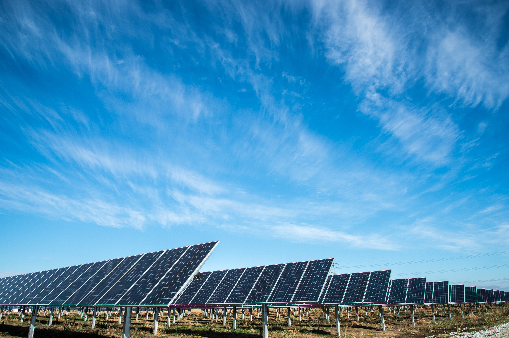
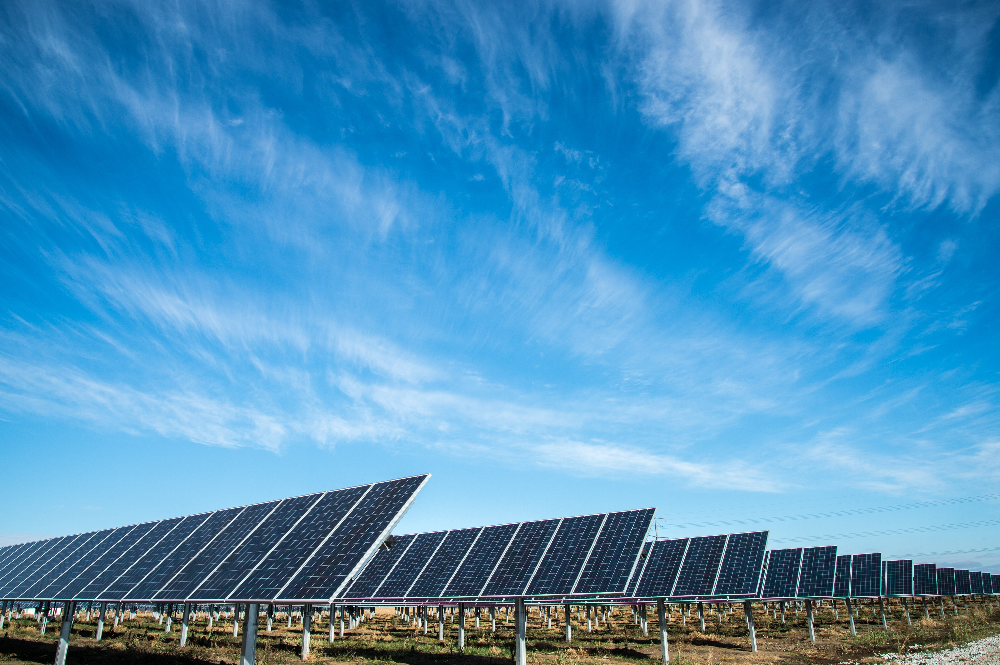

ADVANCING THE SCIENCE OF SOLAR DATA


WHAT IS THE NSRDB?
The National Solar Radiation Database (NSRDB) is a serially complete collection of meteorological and solar irradiance data sets for the United States and a growing list of international locations. The data are publicly available at no cost to the user. The NSRDB provides foundational information to support U.S. Department of Energy programs, research, and the general public. Comparable products are also available from commercial vendors.
SUNSHOT INITIATIVE
Supported by the U.S. Department of Energy’s SunShot Initiative, the NSRDB is a widely used and relied-upon resource. The database is managed and updated using the latest methods of research by a specialized team of forecasters at the National Renewable Energy Laboratory (NREL).
EVALUATION OF THE NSRDB
This new report evaluates the NSRDB data, particularly the new approach and expanded data.
 
